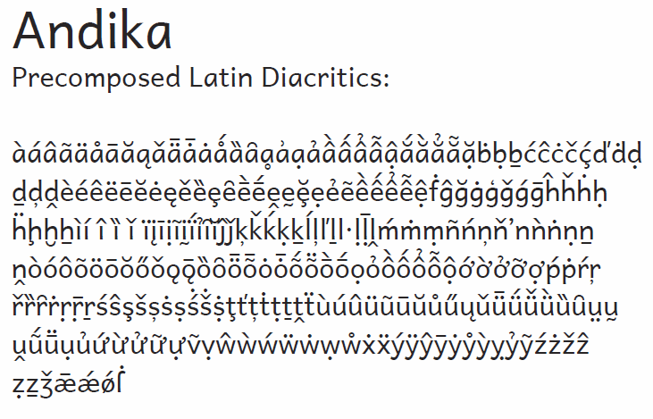

Andika - Design
Andika is a sans serif, Unicode-compliant font designed especially for literacy use, taking into account the needs of beginning readers. The focus is on clear, easy-to-perceive letterforms that will not be readily confused with one another.
A sans serif font is preferred by some literacy personnel for teaching people to read. Its forms are simpler and less cluttered than those of most serif fonts. For years, literacy workers have had to make do with fonts that were not really suitable for beginning readers and writers. In some cases, literacy specialists have had to tediously assemble letters from a variety of fonts in order to get all of the characters they need for their particular language project, resulting in confusing and unattractive publications. Andika addresses those issues.
Andika provides clear, simply designed letters. This facilitates letter recognition, a skill second only to distinguishing sounds in learning to read. Some fonts have letters that look like mirror images of each other, which for a new reader can be confusing. Andika gives those similar letters distinct characteristics to reduce confusion. The differences are so small that most people would not notice them, but those small differences give the brain a little help. We also applied these differentiation techniques throughout all of the hundreds and thousands of glyphs in the font, so that even those writing systems that use rare symbols can benefit.
Some of the things requested by literacy specialists over the years are addressed in Andika:
- sans serif design (no ‘little feet’ on the letters)
- lower case ‘a’ and ‘g’ that look more like handwriting (also known as ‘single-story’ shapes)
- capital i, lower case l, and numeral 1 that don’t look alike
- lower case r which, when followed by n, doesn’t look like m
- diacritics (accent marks) that are large enough to recognize, and which position themselves properly
- letter shapes to fit local preferences. Some parts of the world use a y with no curved tail, for example, or a 7 with a crossbar. These are just two of the optional letter shapes available
Type samples showing an inventory of some of the unusual glyphs and features can be downloaded here: Andika Type Sample.
A sample from one page is shown below.
For a complete list of characters included in Andika, see Character Set Support.
SIL International is the creator of the Andika fonts, and is the owner of all proprietary rights therein.
Andika is a trademark of SIL International.